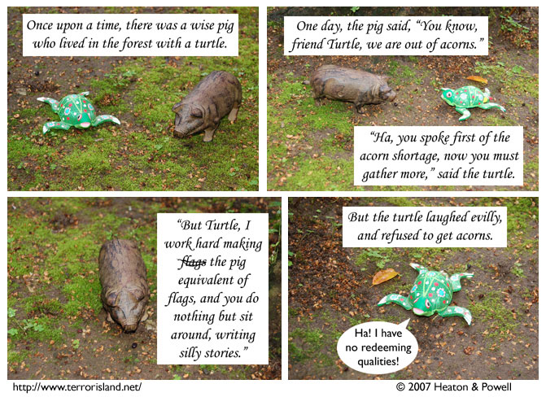

Strip #104
— Friday, February 9, 2007
I guess the turtle’s kind of a jerk
Notes, Thoughts, &c.
Ben’s Notes
It was nice getting to work with a different scale for this strip. The pig and turtle are closer to the size of the rocks from FOMS than they are to gamepieces. I think of this size as “small” and the usual Terror Island scale as “tiny.” This may not be quite how those terms are used by others, but it means that I can say, for instance, “I need to get some tiny chairs” and know exactly what I mean.
When we planned out this strip, I was actually thinking about using tiny objects for the characters, but at the last minute, I decided that I liked the way this pig looked better. Maybe the tiny pig and turtle will end up being used for something else.
By the way, my term for Omicron’s scale is “normal-sized.”Lewis’s Notes
This is the fairy tale Stephen commissioned, in case you are very confused.